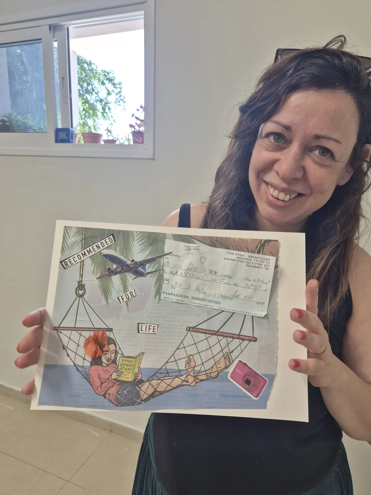
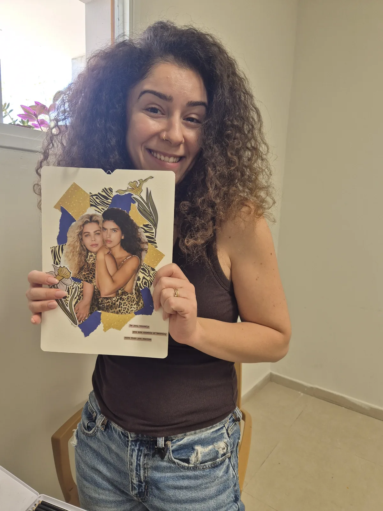
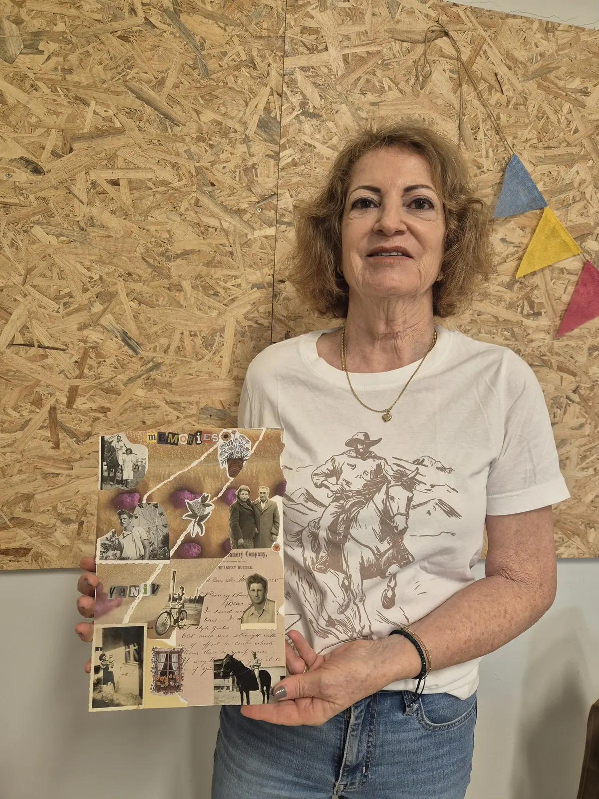
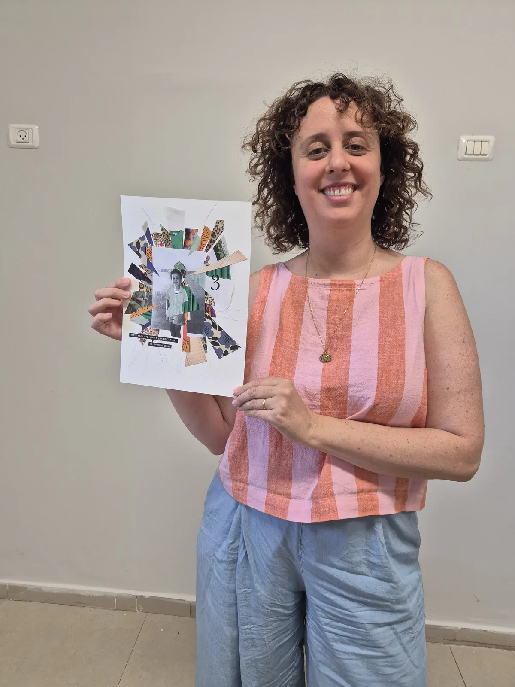
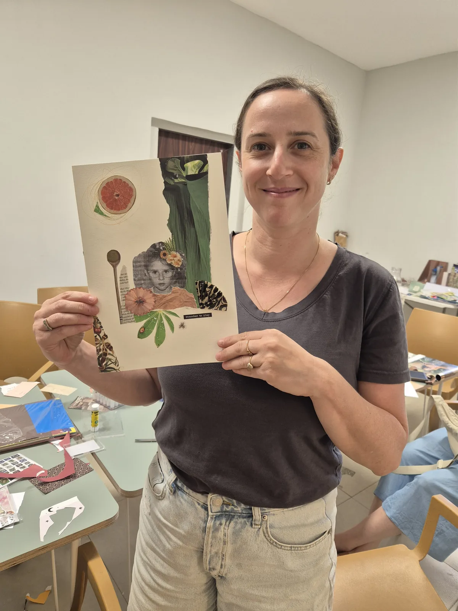

ערב קולאז׳ לחברות
גוזרות, מדביקות, מדברות – וכל אחת יוצאת עם קולאז׳ משלה. בלי ניסיון.
2–3 שעות · 4–10 משתתפות · 180 ₪ למשתתפת · אין תוספת מע״מ · בבאר טוביה או אצלכן

ערב בנות יצירתי, לכל סיבה להיפגש
סדנת יצירה לנשים שמתאימה כמעט לכל מפגש:
- ערב בנות
- ערב חברות
- יום הולדת למבוגרות
- מסיבת רווקות
- ערב צוות קטן
סביב שולחן אחד, עם ערימת השראה, מספריים ודבק, קורה משהו טוב: הידיים עסוקות, הראש משתחרר, והשיחה זורמת. לא צריך ניסיון ולא צריך ״יד טובה״ – רק סקרנות ורצון ליהנות.
ליצור אחרת. לראות אחרת. להתחבר דרך יצירה.




איך נראה ערב קולאז'
ככה עובר ערב קולאז׳:
- מתיישבות סביב שולחן ערוךכשהערב מתחיל, השולחן כבר מוכן: ערימות של ניירות וינטג׳, מגזינים ואיורים, מספריים ודבק לכל אחת.
- פתיחה קצרה והשראהאני מסבירה בקצרה איך בונים קולאז' ומדגימה שלב אחרי שלב. לא צריך לדעת לצייר.
- בוחרות, גוזרות ומדביקותכל אחת בקצב שלה. אני עוברת בין המשתתפות, עוזרת כשצריך ולא לוחצת, והשיחה כבר זורמת לבד.
- כל אחת והקולאז' שלהבסוף מסתכלות יחד על העבודות, וכל משתתפת לוקחת את הקולאז' שלה הביתה.
מילים טובות
היה ממש נעים, עברת ועזרת אבל לא לחצת, והייתה אווירה ממש טובה. הייתה הרגשה של שפע, וזה כיף ומפנק.
הרגשתי שהמדריכה נתנה תשומת לב לכל אחת. יצאנו עם זיכרון מהמם.
פסק זמן של יצירתיות נהדרת. מקום נעים, חברה טובה, ומנחה נעימה ומסבירת פנים שמסייעת בצורה מקצועית.
כמה זמן נמשכת סדנת קולאז' לנשים?
2 עד 3 שעות, לפי הקבוצה והקצב שלכן. אין לחץ לסיים – כל אחת יוצרת בזמן שלה.
צריך ניסיון ביצירה?
בכלל לא. אני מדגימה שלב אחרי שלב ומלווה כל אחת. גם מי שבטוחה ש״אין לה יד״ יוצאת עם קולאז' שהיא אוהבת.
אני רוצה לבוא לבד, בלי קבוצה. אפשר?
כן. אפשר להצטרף לסדנה פתוחה בבאר טוביה, לבד או עם חברה. למועד הקרוב ←